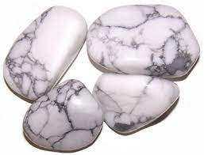

Howlite
Information
You can find howlite red in Canada, USA, Russia, Germany, Mexico, Namibia, Pakistan and Turkey. This crystal is the main one and the others are dyed.
Howlite has a porous texture and is also known as Magnesite. Its color scheme is chalky white with dark veins but it can also be colorless. The meaning of Howlite is linked to patience and perspective.
Howlite can help you achieve peace and calm while keeping you attuned to your pure and infinite energies. Howlite is a stone of emotional healing that contains vibrations directly resonating with one’s root and crown chakras. This is a unique combination, with Howlite opening up portals of entry on opposite points of the etheric body. Your root chakra becomes fully connected to Mother Earth and all the energy she provides, while staying in direct contact with your higher self.
Health Benefits
You can find here some Healing Properties.
Outfits